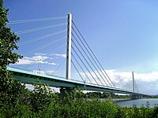
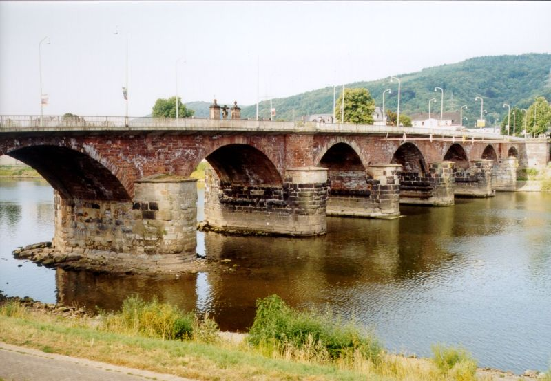
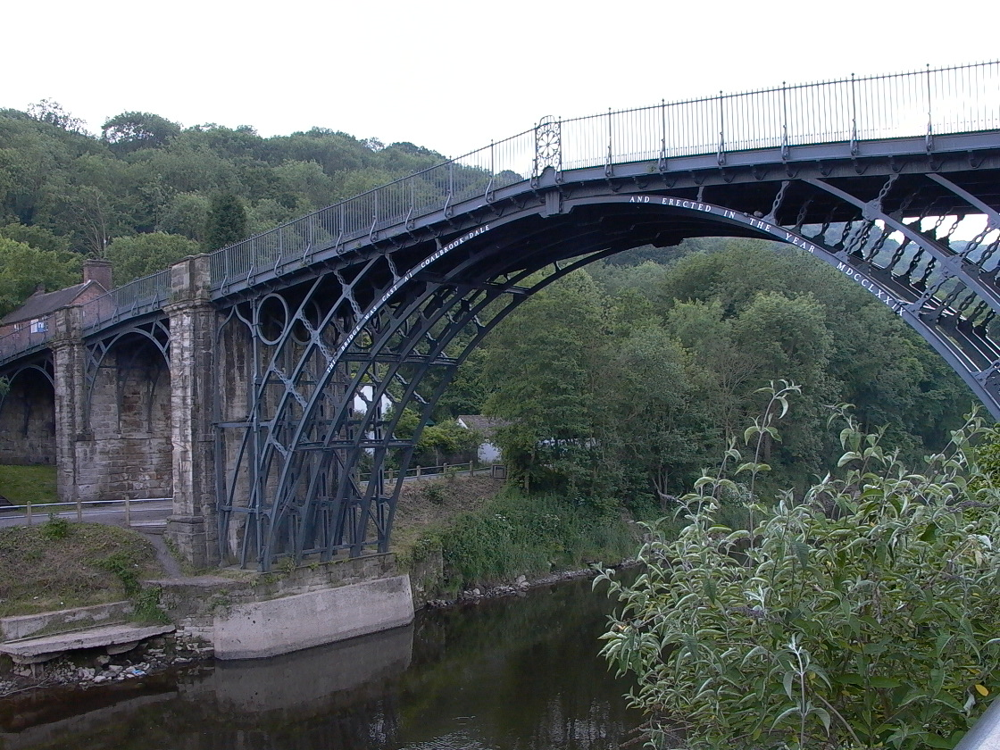
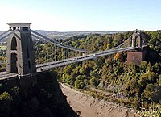

Most – rodzaj przeprawy w postaci budowli inżynierskiej, której konstrukcja pozwala na pokonanie przeszkody wodnej lub lądowej skonstruowana w taki sposób, że pod nią pozostaje wolna przestrzeń (w odróżnieniu od nasypu).
Przęsłem mostu nazywa się element konstrukcyjny łączący dwie podpory lub przestrzeń między nimi.

Mosty dzieli się na:
- przepusty – budowle mostowe prowadzone przez nasypy (według innych definicji są to niewielkie mosty do rozpiętości 2-3 metrów)
- mosty rzeczne – nad przeszkodami wodnymi (rzeki, jeziora, zatoki, morskie cieśniny itp.), popularnie zwane mostami
- mosty inundacyjne (zalewowe) – przęsła lub mosty nad terenami zalewowymi
- wiadukty – nad suchymi przeszkodami (doliny, wąwozy), również nad drogowymi i kolejowymi trasami komunikacyjnymi
- estakady – nad terenami zabudowanymi.
Klasyfikacja mostów
Ze względu na rodzaj drogi prowadzonej po moście dzielone są one następująco:
- drogowe – przez most prowadzony jest ruch komunikacji samochodowej
- kolejowe – przez most prowadzona jest trasa kolejowa

- wodne (akwedukty) – przez most prowadzony jest kanał wodny, bądź grawitacyjnie strumień wody
- mosty przemysłowe (suwnice, mosty przeładunkowe)
- kładki piesze – dla ruchu pieszego (szczególnym przypadkiem kładek są żywe mosty)
Ze względu na charakter ustroju nośnego:
- stałe
- ruchome (obrotowe, przesuwne, podnoszone, klapowe)
Ze względu na rodzaj materiału:
- drewniane
- masywne (kamienne, ceglane, betonowe, żelbetowe, sprężone)
- metalowe (żelazne, stalowe, żeliwne)
- kompozytowe
Można spotkać rozwiązania, w których podpory wykonane są z innego tworzywa niż przęsła, np. stalowe przęsła na filarach z cegły (most stalowo-ceglany).
Z uwagi na liczbę przęseł można wyróżnić mosty jedno-, dwu-, lub wieloprzęsłowe.
W zależności od konstrukcji pomostu wyróżnia się mosty płytowe, belkowe, skrzynkowe, a także sklepione, łukowe i kratowe.

Z uwagi na sposób podparcia przęsła mosty dzielone są na: wolnopodparte, wspornikowe, łukowe, wantowe i wiszące, o przęsłach stałych lub ruchowych (mosty zwodzone, obrotowe, uchylne i przetaczane).
Most podwieszony (most wantowy) – to most o płycie przęsła zawieszonej na cięgnach mocowanych na wieżach zwanymi również pylonami.
Przykładem takiego mostu jest największy i najdłuższy most w Polsce – Most Solidarności w Płocku przez Wisłę o rekordowej rozpiętości najdłuższego przęsła – 375 metrów,
będącego najdłuższym przęsłem w Polsce i tej części Europy. Długość mostu głównego (podwieszonego) wynosi 615 metrów, natomiast długość całkowita mostu to 1712 metrów.
